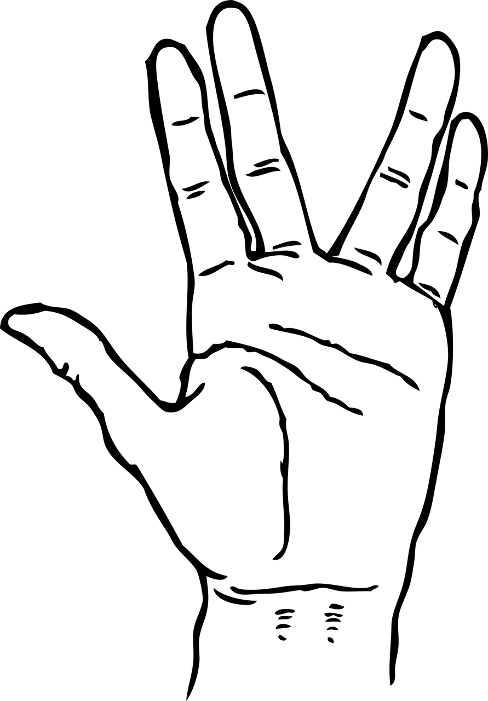

Blog for 9/4/2020:
Beam me up, Scotty
Welcome all to my first blog! For those of you wondering the kind of content this page could have, by
the end, this post will give a good clue!

Ok ok, so, imagine this. Teleportation has just been invented. It copies the form of
Star Trek, in which bodies are dematerialized and reconstructed through
quantum entanglement.
Basically, your body is copied, destroyed, and recreated at a molecular level in the location
you wished to teleport to. How cool is that? I’m sure you’re very excited that some random blog
on the internet has just told you teleportation exists with a page from Popular Mechanics as proof.
This is only theoretical, ok.
But, while this sounds all sweet and amazing, there’s something that’s been in the back of
my mind since it arrived in a conversation with a few of my friends. Is the teleported you actually
you? I mean, think about it. Essentially, you are dying and being cloned. Your atoms are copied to the
new location. Hell, even if your atoms are transported you are being dematerialized, so you’re still dying.
So is the person that has just been recreated you or your clone that has the same memory and personality as you?
This questions the theory behind the existence of a soul and the centuries-long argument
of mind-body dualism. Do you believe that your body is purely physical? Is your mind, or soul,
separate from the confines of your body? It’s something that’s been on my mind for a while, and
I honestly can’t tell. You need your body to live. Your mind is physical, it’s real, it can be
affected physically. What happens to it can change your personality and your thoughts. But how can
I look at a clone and honestly say that it’s me? I’m not sure if I’m willing to say that when Scotty
beams me up, I’m the one that’s traveling.
 What I find crazy about the question is that it’s not as crazy as it sounds. With the way global warming
is going, it’s a definite future. At this point, I’m pretty sure we’ll find some way to live on the Moon or Mars
before we stop abusing the planet to death.
What I find crazy about the question is that it’s not as crazy as it sounds. With the way global warming
is going, it’s a definite future. At this point, I’m pretty sure we’ll find some way to live on the Moon or Mars
before we stop abusing the planet to death.
 I would like to say I have faith in humanity for not becoming a literal parasite of the galaxy like so many sci-fi
shows indicate, but I really think it’s a strong possibility. Although I hate to admit it, inherently, I agree with
the old man
I would like to say I have faith in humanity for not becoming a literal parasite of the galaxy like so many sci-fi
shows indicate, but I really think it’s a strong possibility. Although I hate to admit it, inherently, I agree with
the old man  Every time I look at it, I’m filled with memories of trick-or-treating: the fun of dressing up as an elven warrior, a Hogwarts wizard, or a Jedi of the Old Republic, the thrill of
exploring neighborhoods far from home with friends, the decorations of ghouls and graves and the few houses that went ALL out. The rush of adrenaline as we took a few extra candies
than we were told to by the paper signs taped on the unattended bowls.
Every time I look at it, I’m filled with memories of trick-or-treating: the fun of dressing up as an elven warrior, a Hogwarts wizard, or a Jedi of the Old Republic, the thrill of
exploring neighborhoods far from home with friends, the decorations of ghouls and graves and the few houses that went ALL out. The rush of adrenaline as we took a few extra candies
than we were told to by the paper signs taped on the unattended bowls.
 I remember one Christmas, my sister and I woke up and met to go down our stairs together, to reach the living room and view what Santa had brought us. We rushed over, and as we approached
the base of the tree, we were confused. There was nothing there.
I remember one Christmas, my sister and I woke up and met to go down our stairs together, to reach the living room and view what Santa had brought us. We rushed over, and as we approached
the base of the tree, we were confused. There was nothing there.